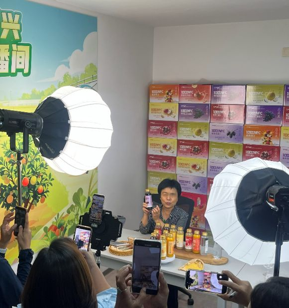
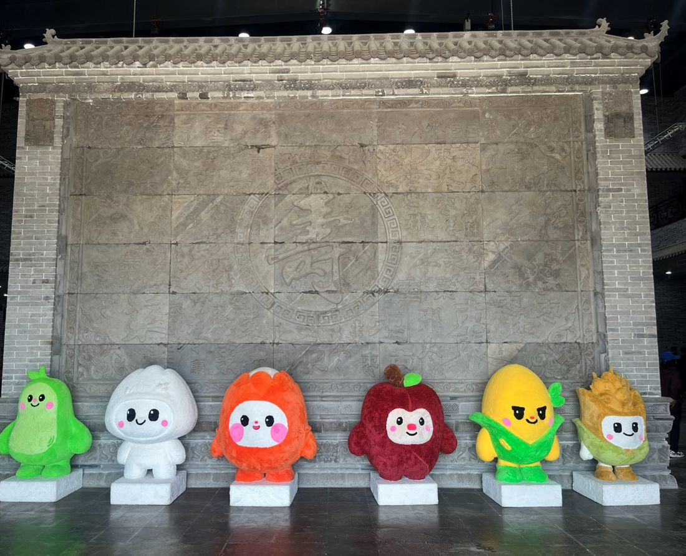
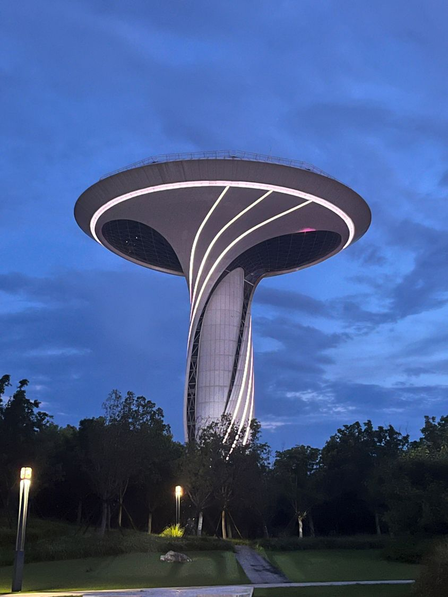
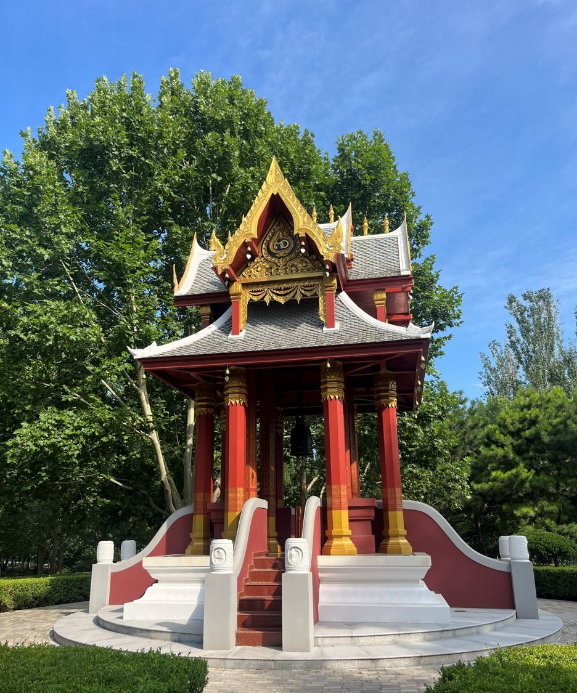

บทเรียนจากปักกิ่ง ยุ่นเฉิง และเหอเฝย — หนึ่งเดือนบนเส้นทางจากเมืองหลวงสู่หมู่บ้านต้นแบบ ถอดรหัสว่าเหตุใดจีนจึงวางชนบทและการเกษตรไว้ที่ศูนย์กลางของยุทธศาสตร์ชาติ
การ“ยกระดับภาคเกษตร” ที่เพิ่มประสิทธิภาพการผลิตและสร้างมูลค่าเพิ่มให้กับสินค้า และ “ฟื้นฟูชนบท” ที่ทำให้ชุมชนน่าอยู่น่าเที่ยว สร้างงานและสร้างรายได้ให้กับคนในพื้นที่ — เป็นความสำเร็จสองด้านที่ส่งเสริมกัน
ความสำเร็จที่สร้างจากความต่อเนื่องของแผน 5 ปี
สำหรับประเทศที่ต้องเลี้ยงประชากรเกือบ หนึ่งในห้าของโลก ด้วยพื้นที่เพาะปลูกจำกัด ความมั่นคงทางอาหารคือ “เส้นตายที่ต่อรองไม่ได้” และจีนพิสูจน์ว่าหัวใจของความสำเร็จคือ ความต่อเนื่องของแผน 5 ปี ที่สะสมมากว่า 70 ปี ภายใต้แนวคิด “ซันหนง” (三农) ที่มัดรวมเกษตรกร เกษตรกรรม และชนบทเข้าด้วยกัน
เริ่มใช้กลไกแผน 5 ปี วางรากฐานการผลิตอาหารและการรวมกลุ่มเกษตร เพื่อเลี้ยงประชากรและสร้างเสถียรภาพหลังก่อตั้งสาธารณรัฐ
ผ่านการปฏิรูปที่ดิน การเปิดประเทศ และการปฏิรูปเศรษฐกิจ เปลี่ยนจาก “ผลิตให้พอกิน” สู่ “ผลิตเชิงพาณิชย์”
เน้นคุณภาพสินค้าเกษตรและมาตรฐานความปลอดภัย เปลี่ยนโจทย์จาก “ปริมาณ” สู่ “คุณภาพ” ปิดท้ายด้วยการประกาศชัยชนะเหนือความยากจนขั้นรุนแรงปลายปี 2020
ผลลัพธ์คือรายได้สุทธิต่อหัวของชาวชนบทปี 2024 แตะ 23,119 หยวน โต 6.3% และช่องว่างรายได้เมือง-ชนบทแคบลงเหลือ 2.34 : 1[7]
ผลักดันเกษตรอัจฉริยะด้วย AI, โดรน และ Big Data พร้อมตั้ง เป้าผลิตธัญพืชราว 725 ล้านตันภายในปี 2030[8] และยกอัตราตรวจผ่านความปลอดภัยอาหารไม่ต่ำกว่า 98%
| ประเทศ | ใน GDP | ในงบประมาณ | ดัชนีความเข้มข้น |
|---|---|---|---|
| 🇯🇵 ญี่ปุ่น | 1.0% | 2.0% | 2.00 เท่า |
| 🇨🇳 จีน | 6.8% | 9.5% | 1.40 เท่า |
| 🇹🇭 ไทย | 8.7% | 3.4% | 0.39 เท่า |
ดัชนีความเข้มข้น = สัดส่วนงบประมาณ ÷ สัดส่วน GDP — ค่า > 1 หมายถึงรัฐจัดสรรงบให้เกษตร มากกว่า น้ำหนักทางเศรษฐกิจของภาคเกษตรเอง
ที่มา: ธนาคารโลก[1][2][3] · สำนักงานสถิติแห่งชาติจีน[4] · กระทรวงการคลังจีน[9] · พระราชบัญญัติงบประมาณรายจ่ายประจำปีงบประมาณ พ.ศ. 2567[5] · กระทรวงเกษตร ป่าไม้และประมงญี่ปุ่น[6]
ไทยเป็นประเทศที่ ภาคเกษตรมีน้ำหนักทางเศรษฐกิจสูงที่สุดในสามประเทศ (8.7% ของ GDP) แต่กลับ ได้รับการจัดสรรงบประมาณต่ำที่สุดเมื่อเทียบกับน้ำหนักนั้น (0.39 เท่า) ขณะที่ญี่ปุ่นซึ่งเกษตรมีสัดส่วนเพียง 1% ของ GDP กลับลงทุนเข้มข้นถึง 2 เท่า และจีนลงทุน 1.4 เท่า — สะท้อนว่าทั้งจีนและญี่ปุ่นมองเกษตรเป็น “ความมั่นคง” ไม่ใช่เพียง “ภาคเศรษฐกิจ”
เมื่อภาคอุตสาหกรรมเติบโตและกระบวนการพัฒนาเมืองเร่งตัวขึ้น คนรุ่นใหม่จำนวนมากย้ายออกจากชนบทเข้าสู่เมืองเพื่อแสวงหาโอกาสทางรายได้ การศึกษา และคุณภาพชีวิตที่ดีกว่า ผลที่ตามมาคือภาคเกษตรและพื้นที่ชนบทเผชิญภาวะขาดแคลนแรงงานและการพัฒนาที่ล้าหลัง จนช่องว่างรายได้ระหว่างเมืองกับชนบทขยายกว้างขึ้น จึงกลายเป็น “โจทย์สำคัญ” ที่แผนฉบับ 13–15 ของจีนมุ่งแก้ไขอย่างต่อเนื่อง และเราได้เห็นผลลัพธ์ความพยายามในแก้ปัญหาจากการได้ลงพื้นที่จริง
แผนฉบับที่ 13–15 มิได้อยู่แค่บนกระดาษ จาก 16 หลักสูตรและ 14 จุดศึกษาดูงาน เราได้เห็นผลลัพธ์ที่จับต้องได้
สอดคล้องกับ แผนฉบับที่ 15 ที่เน้นเกษตรอัจฉริยะ มหาวิทยาลัยเกษตรศาสตร์อานฮุย ตั้ง “สถานีทดลองครบวงจร” ลงในพื้นที่จริง ยึดสูตร “พื้นที่ + ภาครัฐ + มหาวิทยาลัย” คณาจารย์ทำงานเคียงข้างเกษตรกร
ผลลัพธ์: เกษตรกรชนบทเข้าถึงผลิตภาพที่เคยกระจุกในเมือง ช่องว่างโอกาสแคบลงจากต้นทาง

จีนไม่หยุดที่การขายผลผลิต แต่สร้าง “ตัวตน” ให้สินค้าเกษตร ผ่านมาสคอตและการออกแบบเชิงสร้างสรรค์ ทำให้พิพิธภัณฑ์และศูนย์เรียนรู้ทางการเกษตรกลายเป็นจุดหมายท่องเที่ยวที่ดึงดูดครอบครัวและคนรุ่นใหม่

ตัวอย่างกิจการแปรรูปแอปเปิ้ลและน้ำผลไม้เข้มข้นที่ยุ่นเฉิง รัฐร่วมลงทุนราว 48% — หากรัฐไม่ร่วมลงทุน เอกชนจะไม่คุ้มที่จะตั้งโรงงานในพื้นที่ห่างไกล ซึ่งการลงทุนโรงงานแปรรูปเหล่านี้ช่วยยกระดับสินค้าเกษตรและเพิ่มกลไกรับซื้อสินค้าเกษตรในราคาสูงขึ้นผ่านการอุดหนุนของรัฐ นอกจากนี้เมื่อธุรกิจอยู่ตัวแล้วรัฐจึงค่อยถอนทุนคืน[16]
ตรงกับหัวใจของ แผนฉบับที่ 14 จีนลงทุนถนน รถไฟความเร็วสูง โลจิสติกส์ และอินเทอร์เน็ต พร้อมพัฒนาที่อยู่อาศัย และยกระดับหมู่บ้านเป็นแหล่งท่องเที่ยวระดับ 5A
ผลลัพธ์: เมื่อชนบทมีโครงสร้างพื้นฐานและรายได้จากท่องเที่ยว “แรงผลัก” ให้คนหนุ่มสาวทิ้งบ้านก็ลดลง
การพัฒนาเมืองของจีนไม่ได้วัดจากตึกสูง แต่วัดจาก พื้นที่สีเขียวและพื้นที่สาธารณะคุณภาพสูง ที่ออกแบบอย่างมีเอกลักษณ์
เมืองเหอเฝยลงทุนกับสวนสาธารณะและภูมิสถาปัตย์ระดับนิทรรศการ เพื่อสร้างภาพลักษณ์เมืองน่าอยู่ ซึ่งเป็นปัจจัยดึงดูดบุคลากรรุ่นใหม่ให้อยู่ในพื้นที่

ยุ่นเฉิงเลือกใช้ “กวนอู” บุคคลในประวัติศาสตร์ที่ถือกำเนิดในพื้นที่ เป็นแกนกลางของอัตลักษณ์เมือง สร้างเทวรูปขนาดมหึมาบนเขาเป็นสัญลักษณ์ที่มองเห็นแต่ไกล
เปลี่ยนเมืองอุตสาหกรรมเกษตรให้เป็นจุดหมายเชิงวัฒนธรรมและศรัทธาที่ดึงดูดนักท่องเที่ยวทั่วโลก รวมถึงชาวไทยเชื้อสายจีน
หัวใจของการฟื้นฟูชนบทยุคใหม่คือ “ตัดสินใจบนข้อมูล” ที่ หมู่บ้านซีเว่ย (西碃村) เมืองยุ่นเฉิง เราได้เห็น mini program “善治美” ที่พัฒนาโดยมูลนิธิ Tencent ทำงานบน WeChat เพื่อสื่อสาร รับเรื่องร้องเรียน ใช้ระบบสะสมแต้ม (积分制) และติดตามการพัฒนาระดับหมู่บ้านอย่างโปร่งใส[16]
จากหน้าจอจริง: หมู่บ้านซีเว่ย (西碃村) ตำบลฝานชุน เมืองเหอจิน ยุ่นเฉิง มณฑลซานซี — หมู่บ้านระดับ “5 ดาว” ที่รวมศูนย์บริการประชาชน (我为群众办实事), ห้องรับเรื่องจากเลขาธิการพรรค (书记会客厅), ระบบสะสมแต้ม (积分制) และเวทีชาวบ้าน (村民说事) ไว้บนแอปเดียว
จีนแปลง มรดกทางวัฒนธรรมที่จับต้องไม่ได้ ให้เป็นสินทรัพย์เศรษฐกิจอย่างเป็นระบบ ผ่านหลักสูตร “จากผลิตภัณฑ์พื้นเมืองสู่วัฒนธรรม IP” และภูมิปัญญาการทำ รอยพิมพ์ศิลาจารึก ขณะที่มรดกโลกทางสถาปัตยกรรมถูกบริหารจัดการให้เป็นทั้งแหล่งเรียนรู้ พื้นที่พักผ่อนของคนเมือง และเครื่องยนต์เศรษฐกิจท่องเที่ยวไปพร้อมกัน
ความสัมพันธ์เกษตรจีน-ไทยไม่ใช่การแข่งขัน แต่เป็นการเติมเต็มกันแบบ “เขตร้อน-เขตอบอุ่น” — จีนต้องการรสชาติของเขตร้อน ส่วนไทยต้องการเทคโนโลยีและตลาดขนาดใหญ่
หน่วย: ร้อยล้านดอลลาร์สหรัฐ (亿美元) · ปี 2015–2025
ที่มา: เอกสารประกอบการบรรยาย “การค้าสินค้าเกษตรจีน-ไทย” ระหว่างการศึกษาดูงาน[16] — สอดคล้องกับสถิติศุลกากรจีน ปี 2024 ที่ 133.98 พันล้านดอลลาร์สหรัฐ[9] และปี 2025 ที่ราว 153 พันล้านดอลลาร์สหรัฐ[11]
ตลอดช่วงปี 2015–2019 การค้าสองทางเกือบ สมดุลกัน แต่หลังปี 2021 เส้นทางเริ่มแยกจากกันอย่างชัดเจน — มูลค่าที่ไทยนำเข้าจากจีนพุ่งขึ้นต่อเนื่องจนแตะกว่า 1,000 ร้อยล้านดอลลาร์สหรัฐในปี 2025 ขณะที่มูลค่าที่ ไทยส่งออกไปจีนกลับทรงตัวและย่อลง หลังปี 2021 ผลคือ ไทยขาดดุลการค้ากับจีนมากขึ้นเรื่อย ๆ ซึ่งเป็นสัญญาณเชิงโครงสร้างที่ไทยควรจับตา
จีนเป็นคู่ค้ารายใหญ่ที่สุดของไทยต่อเนื่องเกินกว่า 10 ปี และไทยเป็นแหล่งนำเข้าสินค้าเกษตรอันดับ 1 ของจีนในอาเซียน โดยการนำเข้าสินค้าเกษตรของจีนจากไทยเพิ่มจาก 5,561 ล้านดอลลาร์สหรัฐ (2018) เป็น 10,821 ล้านดอลลาร์สหรัฐ (2025) เกือบเท่าตัวในเวลาเพียง 7 ปี[10]
ที่มา: China International Import Expo[10] · กระทรวงเกษตรและสหกรณ์[12]
เป็นสิ่งสำคัญในการรักษาตลาดจีน ไม่ได้อยู่ที่ปริมาณ ยกตัวอย่างกรณีจีนยกระดับการตรวจสารตกค้าง สี Basic Yellow 2 (BY2) และแคดเมียม[12]
เรียนรู้จากจีนมิใช่การลอกแบบ แต่คือการคัดกรองว่าอะไรใช้ได้ อะไรต้องระวัง — เลือกดูทีละหัวข้อ
เพื่อความสมดุลของการวิเคราะห์ ต้องยอมรับว่า โมเดลจีนมีต้นทุนและความเสี่ยงที่ซ่อนอยู่ ซึ่งไทยควรพิจารณาก่อนนำมาใช้
ไทยมี “ฐาน” ที่ดีอยู่แล้ว หลายกรณีศึกษาพิสูจน์ว่าโมเดลแบบจีนใช้ได้ในบริบทไทย สิ่งที่ขาดคือการ ขยายผลเชิงระบบ ไม่ใช่การเริ่มจากศูนย์
พ้นจากตัวเลขและนโยบาย สิ่งที่ประทับใจที่สุดคือ ความเป็นระเบียบ บ้านเมืองสะอาด และ ระบบขนส่งสาธารณะที่เชื่อมโอกาส รถเมล์ รถไฟ เครื่องบิน ฯลฯ ทำให้เข้าใจว่าโครงสร้างพื้นฐานที่ดีมิใช่เพียงพาหนะ แต่คือ “นโยบายกระจายความเจริญ” ที่จับต้องได้ — เมื่อชนบทเดินทางถึงเมืองได้ไม่ยาก–เส้นแบ่งเมือง-ชนบทก็จางลง
ขณะเดียวกันจีนก็ ก้าวไปข้างหน้าโดยไม่ทิ้งรากของตนเอง แม้แต่การติดอักษร 福 กลับหัว ก็แฝงคำอวยพร “福到了” ว่าโชคดีได้มาถึงบ้านแล้ว
และเหนือสิ่งอื่นใดคือ ความสัมพันธ์ไทย-จีน ที่อบอุ่นเกินคาด ตลอดหนึ่งเดือนของการศึกษาดูงาน เราได้รับการต้อนรับด้วยมิตรไมตรีที่จริงใจจากทุกหน่วยงาน สะท้อนสายสัมพันธ์ที่หยั่งรากลึกระหว่างสองประเทศ

“เราไม่ได้ไปจีนเพื่อกลับมาเป็นจีน แต่ไปเพื่อกลับมาเข้าใจว่า ชนบทที่เข้มแข็งคือรากฐานของประเทศที่มั่นคง — และประเทศไทยก็จำเป็นต้องสร้างรากฐานในแบบของเราเอง”บทสรุปข้อคิด ณ ปลายการเดินทาง กรกฎาคม 2569